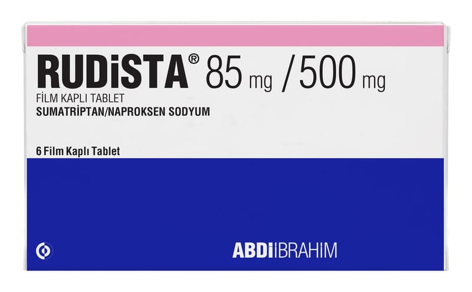

Rudista 85 mg/500 mg Film Kaplı Tablet, 9 Adet

Ne için kullanılır
KT · Bölüm 1RUDİSTA, sumatriptan ve naproksen sodyum (steroid olmayan antiinflamatuar ilaç [NSAİİ]) içerir.
RUDİSTA, mavi renkli, oblong, bikonveks film kaplı tablettir. RUDİSTA, 6 ve 9 film kaplı tablet içeren Alu/Alu folyo blister ambalajlarda kullanıma sunulmuştur.
RUDİSTA, 12 yaş ve üzerindeki hastalarda auralı veya aurasız akut migren baş ağrılarını tedavi etmek için kullanılır.
RUDİSTA, hemiplejik (vücudunuzun bir tarafında hareket edememenizi sağlayan) veya baziler (auralı nadir migren formu) migren gibi diğer baş ağrılarını tedavi etmek için kullanılmaz.
RUDİSTA, sahip olduğunuz migren baş ağrılarını önlemek veya migren baş ağrılarının sayısını azaltmak için kullanılmaz. Bu ilacı kullanmaya başlamadan önce bu KULLANMA TALİMATINI dikkatlice okuyunuz, çünkü sizin için önemli bilgiler içermektedir.
• Bu kullanma talimatını saklayınız. Daha sonra tekrar okumaya ihtiyaç duyabilirsiniz. • Eğer ilave sorularınız olursa, lütfen doktorunuza veya eczacınıza danışınız. • Bu ilaç kişisel olarak sizin için reçete edilmiştir, başkalarına vermeyiniz. • Bu ilacın kullanımı sırasında, doktora veya hastaneye gittiğinizde doktorunuza bu ilacı kullandığınızı söyleyiniz. • Bu talimatta yazılanlara aynen uyunuz. İlaç hakkında size önerilen dozun dışında yüksek veya düşük doz kullanmayınız.
RUDİSTA’nın küme tipi baş ağrılarını tedavi etmek için güvenli ve etkili olup olmadığı bilinmemektedir.